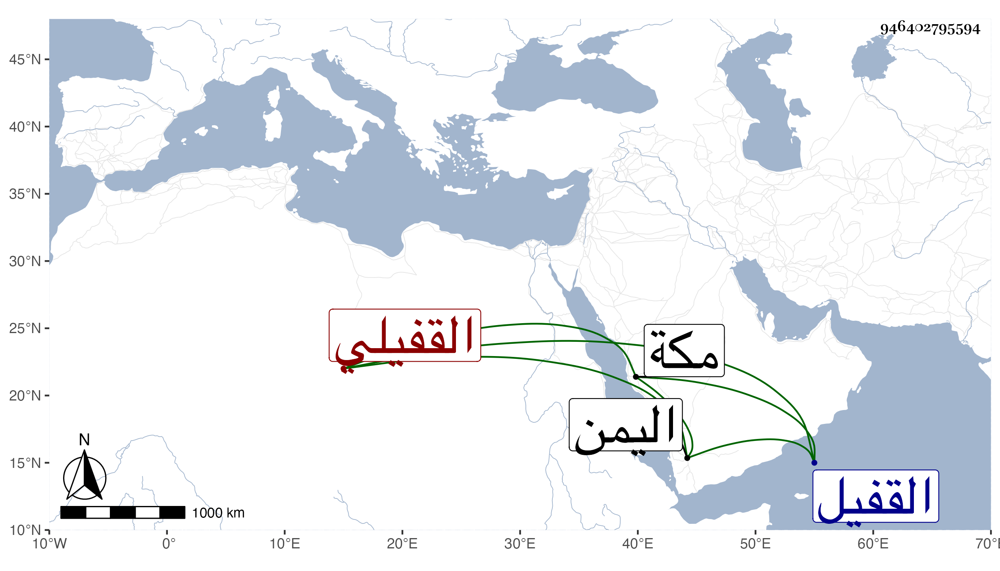

0902Sakhawi.DawLamic.ITO20230111-ara1.EIS1600.946402795594
Biography ID: 946402795594
644
علي بن أحمد بن مفتاح النور بن الشهاب القفيلي نسبة إلى القفيل من أعمال حلى بن يعقوب المكي . كان جده عبد أمير مكة ثقبة بن رميثة الحسنى واحتاط هذا على تركة والده وكان تاجرا وتسبب وعرف عند الناس وصار يتردد للتجارة إلى اليمن . ومات بمكة في سنة سبع وثلاثين .
